If a user role is defined as an Admin, the Administration screens can be accessed via the cog at the bottom left hand corner.
In order to create, delete or update Connection (Identify Provider) or Roles Management settings, the user should be assigned the appropriate role. These are specified below.
An explanation of all the available permissions can be found in the
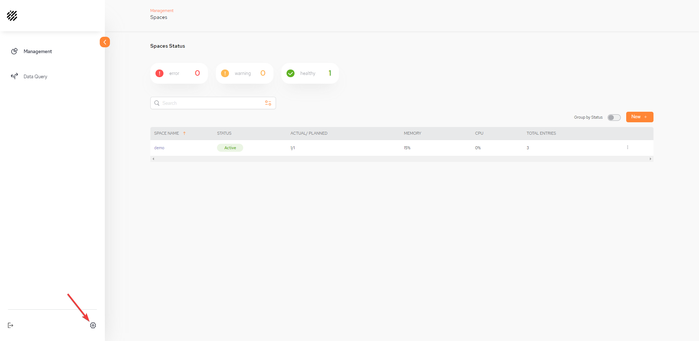
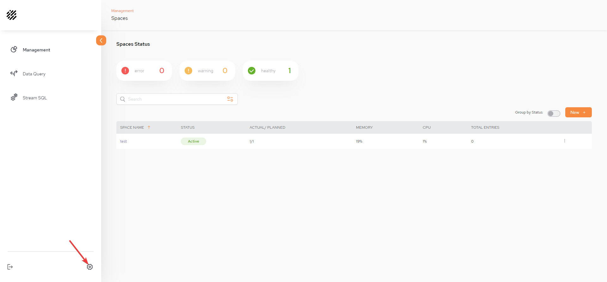
Once in the Administration menu, version and license details will be displayed at the bottom right hand corner.
The License Expiration appears in red if the date is coming up soon.
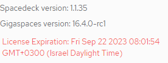
Populate the Connection fields in order to configure SSO login using a predefined IDP.
For user management through the IDP, roles and groups are created and then certain roles can be assigned to the user, for example admin. Via SpaceDeck roles are then created with the same name which was created in the IDP and permissions are then assigned accordingly for each role.
Refer to
In order to be able to configure the Connection (Identify Provider) fields the user has to be assigned the specific permission of Manager Identify Providers, otherwise an error 403 (Forbidden) response will be displayed.
An explanation of all the available roles and permissions can be found on the
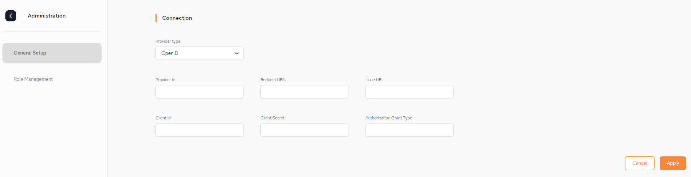
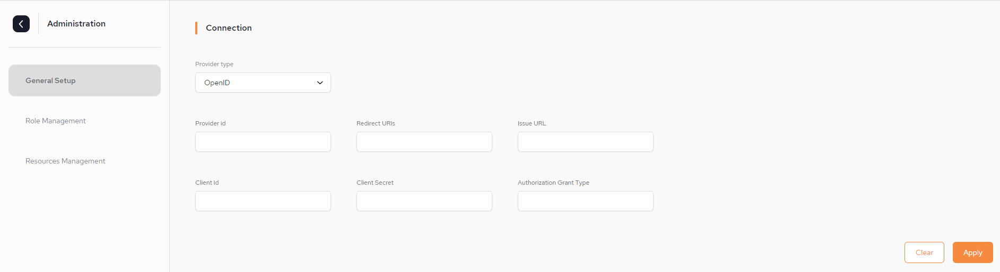
Provider type – The protocol the IDP supports. Currently
Provider id – This is a generic ID that will be used as a name for the auth-config creator.
Redirect URIs – Upon successful sign-in, this endpoing in our server will receive the data from the IDP.
Issue URL – URL of the IDP issuer. For example, Okta, JumpCloud, Azure Active Directory, Github.
Client Id – Unlike the Provider ID, this ID serves as a unique identifier which the IDP generates to the user so they can identify with it,
Client Secret – This is a secret key that is used with the Client ID in order to improve security.
Authorization Grant Type – Each IDP has rules regarding how roles are grouped. These rules have an arbitrary name provided by the IDP. The roles user must use this name to create the roles.
Scope -
Once the connection details are entered, click Apply.
Each role that is configured will have certain privileges (permissions) assigned to it.
The roles should be configured by the company IT manager in the config map of the Kubernetes environment or through IDP setup.
If there is no configuration in the config map (this is not recommended), there is one default roles that is included with the installation which cannot be edited via SpaceDeck and this is ROLE_ADMIN.
To see which privileges (permissions) are applied to a role (in this case ROLE_ADMIN), click the role name:
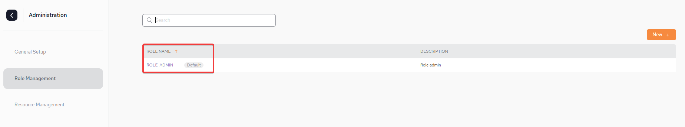
From the IDP side the default role of ROLE_ADMIN will not be created automatically during launch. Therefore, the admin should manually create a group (role) in the IDP with the same name as the default role name in the config map.
Below are two screen-shots showing the Resource Management menu which displays all the permissions applied for the default ROLE_ADMIN at Monitor System Level and at Resources Level. Note that at Resources level, permissions can be applied per Space and Pipeline.
An explanation of all the available permissions for each level can be found n the
System Level - Monitor with permissions for MONITOR_PU and MONITOR_JVM:
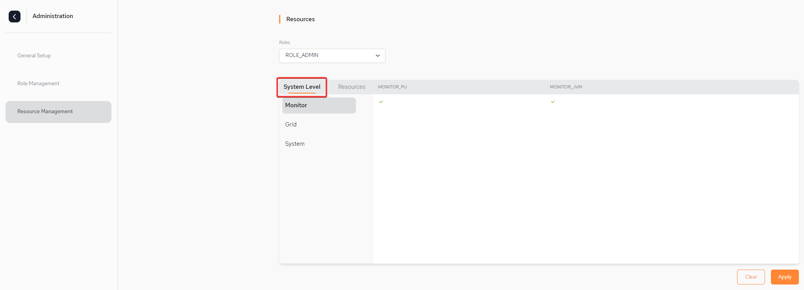
Resources Level - Pipeline with permissions for START_STOP, CREATE, EDIT and DELETE:
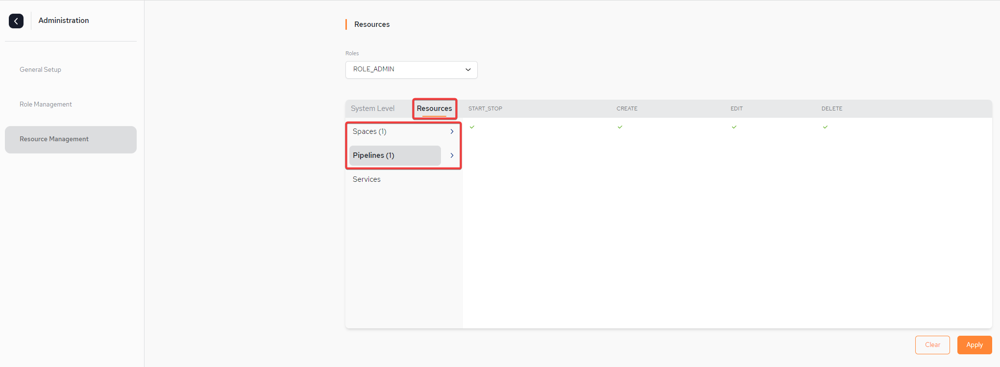
In order to create, delete or update the Roles Management settings, the user has to be assigned the specific permission of Manage Roles, otherwise an error 403 (Forbidden) response will be displayed in the log.
An explanation of all the available permissions can be found on the
Create a new role by clicking New + to access the role setup page.
From the Role Management page, click New + to access the role setup page.
On the setup page:
Provide a name for the new role. In our example it is ROLE_DEMO_USER.
Provide a description of the role.
Select which permissions the role should have by selecting from the list and using the right-arrow to move the role into the list on the right.
An explanation of all the available permissions can be found on the
Click Apply
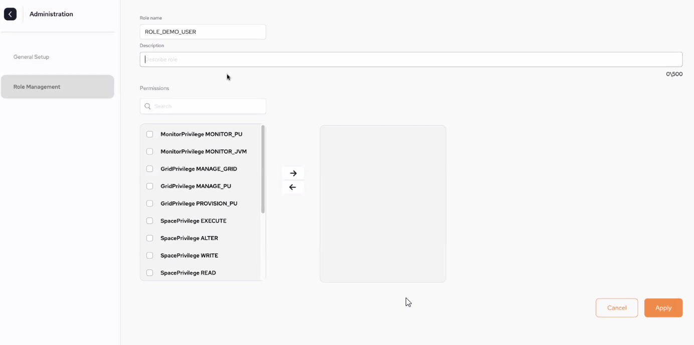
On the Add Role pop-out:
Provide a name for the new role. In our example it is DEMO_USER.
Provide a description of the role.
Click Create Role
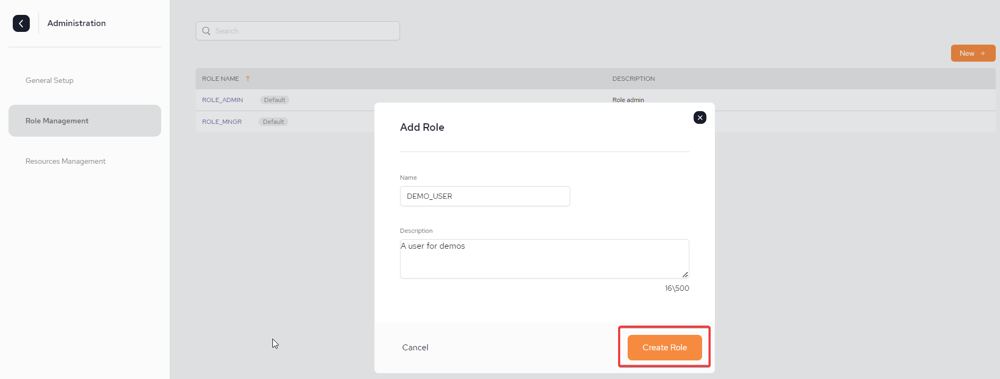
Once the role is created, the Resource Management screen is displayed where permissions will be assigned for the newly created role.
The role will now also be displayed in the Role Management screen.
In the Resource Management select your newly created role from the Roles drop-down list and apply the System and Resources level permissions.
An explanation of all the available permissions can be found on the
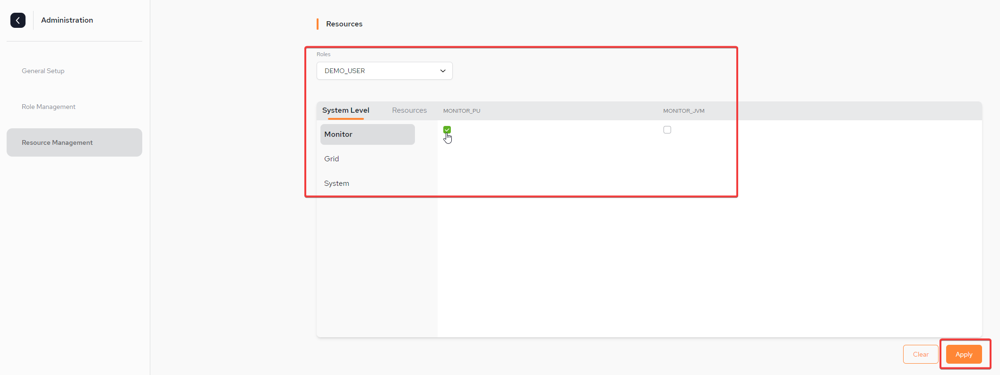
Click Apply to apply the permissions.
The permissions can be updated during run-time without the need to restart any of the components
A role can simply be deleted by accessing the Roles Management page and clicking the kebab menu next to the role name and selecting.
As mentioned previously, there is no option to delete a default role.
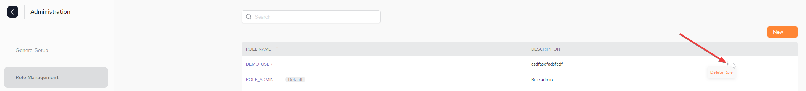